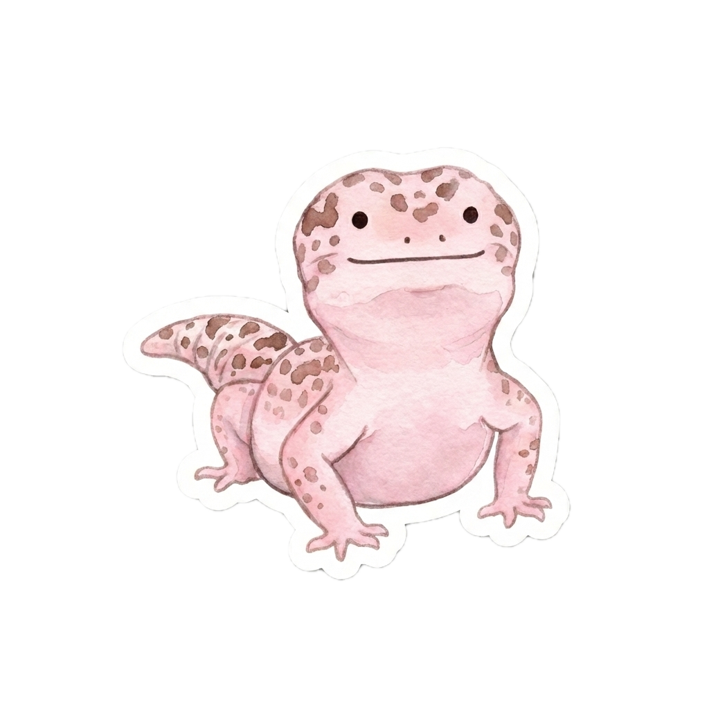

海洋公園遊覽建議
ℹ️ 基本資訊
💡 行程攻略
🚇 交通資訊
🎪 節目時間
海洋奇觀
（動物展館）
亞洲動物天地
（動物展館）
樹懶與好友
（動物展館）
香港老大街
（景點）
纜車站（夢幻水都）
（園內交通）
纜車站（高峰樂園）
（園內交通）
爐炭燒
（泰國餐廳）
四川奇珍館
（動物展館）
海洋列車（夢幻水都）
（園內交通）
海洋列車（高峰樂園）
（園內交通）
小狐獴與大象龜之旅
（動物展館）
北極之旅 & 雪狐居
（動物展館）
南極奇觀
（動物展館）
熱帶雨林探險徑
（動物展館）
太平洋海岸
（動物展館）
海豚探秘（海洋劇場）
（動物展館）
尋鯊探秘
（動物展館）
海洋哺乳動物繁殖及研究中心
（動物展館）
水母萬花筒
（動物展館）
冰極餐廳
（西式餐廳）